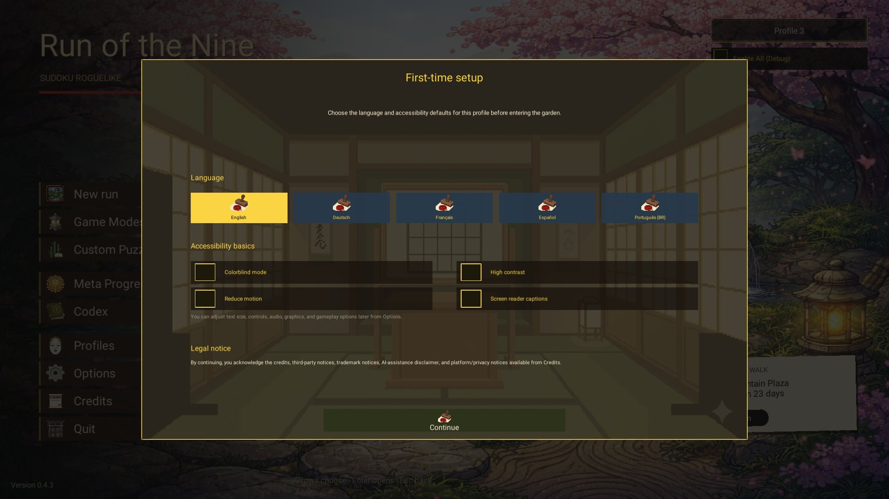
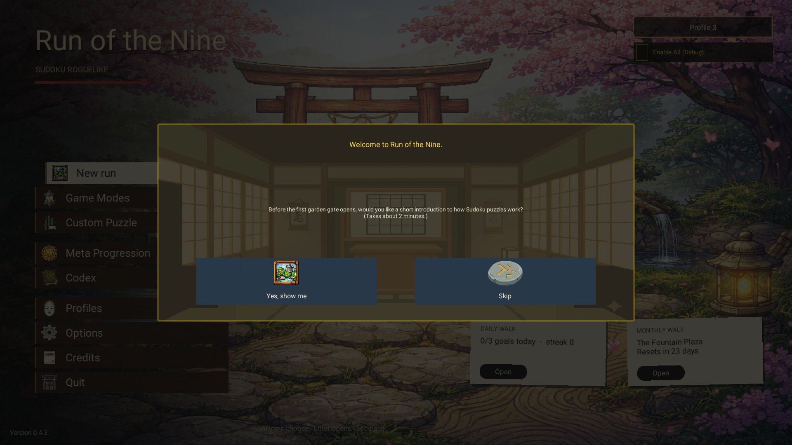

Ein ganz neues Profil zeigt noch das alte dunkle Fenster mit gelben und blauen Knöpfen. Die Mockups sind aus der
Spielgrafik, gebaut ist noch nichts. Wähle eine Variante, dann "Auswahl kopieren".
Heute
Erst die Einrichtung (Sprache, Barrierefreiheit, Rechtliches), danach die Frage nach den Sudoku-Grundlagen.


Vorschläge (RM-233)
Alle Varianten behalten die fünf Sprachen, die vier Barrierefreiheits-Schalter, den Rechtshinweis und die Steuerung mit Controller.